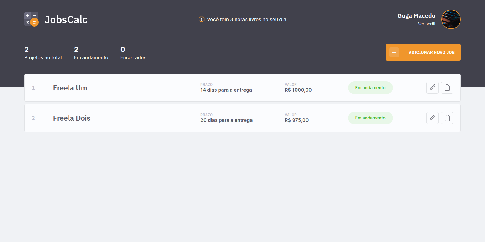

-
JobsCalc
Aplicação de estimativa de cálculo para projetos freelancer, onde é possível cadastrar e excluir jobs (projetos), obtendo uma estimativa de custo de cada job. Também é possível traçar o valor da hora do profissional.
-
Dev.Finance$

Aplicação para controle de finanças. O usuário pode cadastrar, editar ou excluir um lucro ou despesa e será feito um balanço geral. Também têm dark mode.
-
Dunder Mifflin

Site parallax para a maior e melhor sitcom que já existiu!
That's what she saidO foco aqui foi treinar design, responsividade, menu mobile, display flex/grid e JavaScript Básico.


Guga Macedo
Frontend Developer